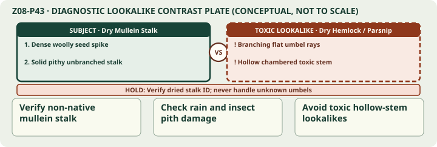

Z08-P43 · Rocks, minerals and materials · Adapted historical material
Willow and Dried Mullein Stalk Condition Checks
Inspect dead willow wood and standing dried common mullein stalks for straightness, moisture damage, and hollow insect rot.
When it applies · Upper Midwest educational hand-drill and craft material screening on lawful sites.
Equipment · Visual bend and pith check; lawful non-park site.

Actions
- Distinguish dry brown second-year common mullein (Verbascum thapsus) stalks and dead dry willow branches carefully from toxic hollow-stemmed wild parsnip or poison hemlock stalks.[R15, B11, B14]
- Test standing dried stalks gently for rain softening, hidden cracks, excessive curvature, and hollow insect boring before relying on them in supervised training.[R15]
- Keep hand-drill material screening strictly within controlled training; wet weather and low dexterity make friction methods unreliable in emergencies.[R15, C16]
Failure recognition · Mistaking a dried wild parsnip or hemlock stalk for mullein risks dermatitis or poisoning, while cracked pithy stalks snap under hand pressure.[R15, B11, B14]
Verify · Positive plant ID separates mullein from umbel lookalikes, and stalks are straight, dry, and intact.[R15, B14]
Stop or change course · Stop immediately if stem identity is uncertain, umbel seedheads appear, or hands show blister/abrasion strain.[R15, B11, B14]
Evidence and editorial notes
- B11 · CDC · Water Hemlock Poisoning — Maine, 1992 (1994)
- Section: Maine case description and editorial note · Conditions: Suspected water-hemlock ingestion
Support: Water hemlock ingestion can cause severe poisoning including seizures. Suspected poisoning needs prompt emergency or poison-centre advice.
Limitations: The case concerns Cicuta maculata. It cannot identify a plant outdoors or establish Conium toxin mechanism, dose, or onset. · Conflicting evidence: Conditions are recorded in the A03 audit.
Editorial note: Mandatory Z05 lethal Apiaceae stop rule. · Specialist reviewer: Botanist and medical toxicologist
Primary source · checked 2026-11-25 - B14 · University of Minnesota Extension · Wild Parsnip Identification and Photodermatitis Hazard (Current web edition)
- Section: Wild parsnip (Pastinaca sativa) phytophotodermatitis · Conditions: Sunny roadsides, prairies, and disturbed meadows in Minnesota
Support: Sap from wild parsnip contains furocoumarins that react with sunlight to cause painful chemical burns and blistering.
Limitations: Avoid bare-skin contact with yellow-umbel roadside stems; wash sap immediately and shield exposed skin from sunlight. · Conflicting evidence: None noted.
Editorial note: Specific Minnesota photodermatitis lookalike warning. · Specialist reviewer: UMN Extension botanist
Primary source · checked 2026-11-25
Current assessment · A04-B14 (2026-11-25) · Bounded support confirmed (A04): Plant sap plus UV exposure can cause phytophotodermatitis. The timing and severity depend on exposure and this record does not identify a specimen. Limits: Specialist review PENDING (UMN Extension botanist); publication HOLD. All release decisions pending. - C16 · CDC · Carbon Monoxide Poisoning Basics (current web edition)
- Section: Carbon Monoxide Poisoning Basics > Sources and Prevention · Conditions: Any enclosed or semi-enclosed structure, garage, porch, tent, or vehicle
Support: Never burn charcoal, operate camp stoves, or run fuel-burning heaters inside homes, garages, tents, or vehicles even with doors or windows partly open.
Limitations: Vent cracks and open garage doors do not prevent lethal CO accumulation. · Conflicting evidence: Refutes dangerous myth that cracking a tent vent or garage door makes indoor combustion safe.
Editorial note: Hard-stop rule across all Z02 ventilation and Z03 combustion cards. · Specialist reviewer: Carbon monoxide safety and emergency medicine
Primary source · checked 2026-11-24 - R15 · Minnesota DNR · Native Trees of Minnesota Identification Reference (Current web edition)
- Section: Regional wood species, grain, bark, and moisture variability · Conditions: Dead downed wood and natural bast fibers in Upper Midwest forests
Support: Wood density, grain straightness, resin content, and decay state vary widely by species, tree part, and moisture history.
Limitations: Visual grain inspection cannot certify structural load capacity; avoid cutting live trees where prohibited and reject punky or cracked wood. · Conflicting evidence: None noted.
Editorial note: Reconciles B007 wood notes with material limits. · Specialist reviewer: Forestry and wood-science specialist
Primary source · checked 2026-11-25
Source lineage · Adapted historical material (B007 wood selection) · Classification · Adapted historical material.